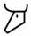
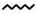
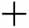

| Oahspe |
|
|
| Jehovih |
Es ( essence; ousia,
in Greek) |
Corpor |
| The All Knowlege, All Highest Light, All Person |
The Unseen World, testimony of angels, also spirit |
Whatever has length, breadth and thickness |
| Ormazd, the ghost of all things |
Mi, a virgin never before conceived, the seen and unseen |
Vivanho, the expression of things. |
| Creator |
Almighty Mother |
Voice, All Speech, All Communion |
| Jehovih was the Unseen, which is spirit |
and the Seen, which is His Person and body |
By being in mastery over His Person, Jehovih created countless
worlds |
| Father |
Mother |
Son |
| All was |
All is |
All ever shall be |
| Spirit |
Sky |
Earth |
| Love |
Wisdom |
Power |
| All Love |
All Symmetry |
All Harmony |
| Music (Apollo) |
Symmetry |
Harmony |
| Ghost, the soul, which is incomprehensible |
Beast, the figure, the person, which is called individual |
Expression, to receive and impart |
| Great Spirit |
First |
Last |
| Creator |
Quickener, Mover |
Destroyer |
| Life, Motion, Individual, Person |
Unseen, which is Potent |
Seen, which of itself is Impotent |
| Soul of all |
Esak - the kosmos, the all world
The 'sun, moon, earth, stars and all the skies' (Panic)
Oh'm - skies, (Poit); Jagat (Sanscrit) |
All Motion was his speech
All that is seen is of my person and my body. |
| Eolin |
Es |
Corpor (matter, loose material) |
| Soul-light, Eolin |
Corporeal light, the Sun |
The burning flame |
| |
The three great lights |
|
| Or, the All Highest |
God, son of Or |
Lord (Adonya), executor of heaven and earth |
| |
The three less lights |
|
| God's angels and lords |
The prophets |
The rab'bahs |
| |
The Sign of Jehovih |
Eloih |
| Circle |
True equal length Cross |
Leaf of life |
| |
The Circle, twice cut called E-O-IH |
|
O - without beginning or end
which contained all within it |
E - line cutting from east to west
represents the light of the east traveling to the west |
Ih - line from below upward, represents one road of all things,
from bottom upward forever;
unseen shaft that cuts all things in two. |
| The unseen spoke in the wind three sounds |
E-O-IH, the sacred letters |
and was called by mortals Eolin, God of the wind |
| E, in the leaves the wind said Ee |
Oh, in the ocean surge and in the thunder above |
Ih, in the winter‘s shrill whistle |
| Eolin showed Himself in |
Three Sacred Colors
(compare with Light) |
Eolin said:
Out of My three sounds, all sounds are made
Out of My three colors, all colors are made |
| Yellow, the highest color |
Blue, the coldest color |
Red, the warmest color |
| Eolin said: |
Three worlds I have made |
|
| All high heavens, for pure and wise angels |
Intermediate world, which rests on the earth |
Earth world, which is for mortals |
| Es I divided into two parts |
Three kinds of worlds (great estates) |
etherea and the other atmospherea |
| etherean worlds |
atmospherean worlds |
corporeal worlds |
| Atmospherean and etherean worlds have various densities |
Three degrees of density of atmospherean
worlds |
Atmospherean worlds created without fixed form, in the process
of condensation or dissolution, intermediate between etherean and
corporeal worlds. |
| Ji‘ay |
A‘ji |
Nebulae |
| Eolin said: |
Three lights |
I have created |
| Sun, to rule the day |
Moon, to rule the night |
Burning fire, for the use of man |
| |
Three spirit lights |
I created |
| Ruch, issues out of My soul |
Shem, from My Lords in heaven to men's souls |
Vas, which comes from the spirits of the intermediate world |
| Eolin said: |
I am in three states |
Such am I, Eolin, Mightiest in three, in All Place and All Time |
| Ghost, which is ever-present and unchangeablet |
Motion, which is everlasting unrest |
Corpor, which is in places, like the earth, stars, sun and moon |
| |
Names of the Creator |
EOLIN in the south |
| JEHOVIH in the east |
ELOIH in the west |
ELOHIM in the north |
| |
The trident |
The Three Lights |
| Jehovih |
His Son, God |
Star in the mortal soul, emblem of resurrection |
| Three within one |
Inqua |
A thing within a thing |
| The soul that is in es |
The es that is in corpor |
The earth within the vortex |
| Compare Inqua to |
Plato's two concentric spheres that
comprise existence, permeated and bounded by soul (third invisible
concentric sphere, encompassing All and interpenetrates to the
heart of corpor) |
In Gnostic terms, a transition from the noumenal to the
sensible, brought about by a flaw, a passion, or a sin. |
| Osire gave |
Three figures |
Zodiac is called the signs of the seasons |
| The signs of seasons to represent the Creator in all the living |
The sign of the sun, with motion and all life coming forth |
The hand of man |
| I‘hua‘Mazda made |
Three marks which
embrace all the created creation |
(comparable to yin and yang symbol) |
| circle |
four dark corners in it, oppose Truth, Anra‘mainyus |
cross, the name of All Good, Fate |
|
|
|
| Existence (invisible, soul) |
Same (visible,
heaven, macrocosm) |
Different (sensible, corpor, microcosm, finite) |
| circle |
cross |
triangle |
| circle, Father |
square, Mother |
triangle, Son |
| positive |
negative |
balance |
| mental |
emotional |
will-power |
| Voidness |
Vachis (speech) |
Vachis vach, and the world was;
Visvasrij (law, or natural law) |
| Voidness |
unseen |
seen world |
| Hirto, Son of Neph, born of an egg descended
out of the highest heaven in deference to Om smote against the
rocks of heaven |
one-half of the shell ascended |
other half became the foundation of the world |
| Creator |
Virgin Mi, Spouse
Mother of Holy Begotten. |
Holy Begotten Son (Apollo) |
| Ormazd |
I'hua'Mazda, Only Begotten Son |
Zarathustra |
Yeshuah - place of salvation, also, of passionless birth
Iesu, signifying "without evil", which is the ultimate salvation
of the soul.
In Exodus 14:13 Yeshuah = salvation [#3444] uses the feminine noun
form, similar to Holy spirit, to indicate submission to the
father's will. |
The name Jesus, Yeshuah, Iesu, Joshua, Iesu, ieue
[Greek: Yesous (Strong's
#2424); English: Jesus]
Mortals thick in tongue could not say Yeshuah, and they said
I-E-Su, from which came the name of many men.
Zeus is pronounced Dzyooce, in Greek, while Jesus is ee-sous
There is a Greek, Latin and Hebrew inscription in John 19:20 as
proof of the use of these languages in that time |
Greek doesn't have Y or sh. These were transliterated from
Hebrew to Greek as I and s; u became ou. The Ah sound was not
vocalised because its not allowable for masculine names to end
with a vowel. S was added to denote masculine. Thus Yeshuah
becomes Iesous (pronounced Yesous in Greek) Iesus in Latin.
Transliterated into English as Jesus, without correcting the s
back to sh, and the end s back to a. J was pronounced like Y in
Old English, There is no J sound in Hebrew. So Yesous (Jesus)
originally was pronounced Yeshu
|
| Jehovih |
God, Jehovih's son |
Joshu
(Yeshu) of Nazareth, a prophet of Jehovih; stoned to death; a
Yeshuah |
| Based on the four letter Tetragrammaton ? ? ? ?
(Yod Hei Vav Hei) |
A possible Name of the Creator
Je-Ho-Vih
? ? ? |
This name of God is said to be pronounced
Ya-H-Weh |
| Je becomes Ye (the letter Yod ?) like E |
Ho becomes the letter Hei ?, like Oh |
Vih becomes Weh (the letter Vav ?) like Ih |
|
|
|
| Western |
|
|
| |
Science |
|
| Big Bang |
Radiation (half of the shell) |
Matter (other half) |
| Energy |
movement |
mass |
| field, reality |
wave |
particle |
|
| Linear |
Electrical |
Anchoring |
| Proton |
Electron |
Neutron |
| Sound |
Energy |
Matter |
| Center |
Volume/Content |
Boundary |
| Nucleus |
Cell |
Membrane |
| DNA |
Chromosome/Genes |
Bases |
Consciousness
cum (with, together)
scire (to know) |
conscientia (moral conscience, ideal inner witness providing
moral guidence, esoteric knowlege of mental states) |
Integration, binding sense perception into comprehensive
simultaneous whole |
| |
Bohm's three Implicate Order categories |
|
| The original, "continuous field" itself along with its movement |
Superquantum wave function acting upon the field.
A "superfield" that guides and organises the original quantum
field |
Player supplied information by an underlying cosmic intelligence |
| |
Nassim Haramein |
|
| singularity |
internal, contraction, generation |
external, expansion, radiation, dissipation |
| |
Electric Universe Model |
|
| magnetic field |
motion |
conductor |
| electric current |
magnetic field |
Birkeland current
filament pair spiral |
| |
Walter Russell |
The mind forms the foundation of creation, being: |
| Omniscient |
Omnipotent |
Omnipresent |
| Thought |
Energy |
Matter |
| Minds thought is light |
Light is universal |
fundamental basis for understanding reality |
| One mind |
One process of thought
|
tuning thoughts to universal process gives greater harmony and
purpose |
|
Magnetism is the exhalation, the radiative reaction |
Electricity is the inhalation, the generative action |
| Each other's opposite bore its mate |
negative electricity discharges. It is state when magnetism
dominates electricity |
positive electricity charges, it is the state of motion when
electricity dominates magnetism |
| each interchange until one becomes the other |
negative electricity produces radiation by expansion |
positive electricity produces gravity by compression |
| |
magnetism repellant or seperative force of disintergrating
matter |
electricity attractive force of intergrating matter |
| magnetism, expelled by electricity in a charging system, entered
system as +ve electricity, and became devitalised into -ve
electricity by nucleal absorption of its +ve charge |
-ve electricity exothermic expansive force absorbing smaller
quantity of energy (expelling greater number, devitalised into
magnetic emanations), lowering its potential |
+ve electricity endothermic contractive force absorbing energy
(expelling smaller number, devitalised into magnetic emanations),
raising its potential |
| |
magnetic attraction is voidance |
|
| |
magnetism is an effect of electricity which works in opposition
to it |
|
| |
Viktor Schauberger |
|
|
|
|
| |
|
|
| |
|
|
| |
Transcendentalism |
|
| God |
Nature |
Man |
| |
|
|
| |
Babylonian |
|
Primordial Apsu
One who exists from the beginning |
Tiamat
Maiden of life |
Mumu
One who is born |
|
|
|
|
|
|
| |
Ancient Egyptian |
|
| Amun (That which is hidden) |
Naun (initial waters; inertia |
Heh (spatial infinity) |
| Demiurge |
Ogdoad made a germ from their seed, and instilled it in the
lotus |
sacred child who issues forth from a lotus in the middle of the
Nun |
| Primordial Eight (the Ogdoad) |
seething primal cradle Nun |
Ra, the principle of light, born of a primordial lotus |
|
|
|
| |
Jewish |
The Hebrew alphabet is a stylized form of the Aramaic alphabet |
| YHWH (the only "name of God") |
Emet — "Truth" (a lesser used name of God) |
Elohim (God), El (mighty one), Adonai (master) are not names,
but titles, aspects |
|
|
|
|
|
|
| Emet, truth |
Din, law, justice (balance)
(3 legs of the tripod that sustains the world) |
Shalom, peace |
The Sages of the Talmud called emet
The “seal of God.” |
The Three Sacred Letters of Emet
The Rabbis said
emet is the beginning, the middle and the end of all things |
The Zohar states:
"Tau makes an impression (faith) on the Ancient of Days [sublime
pleasure innate within the "crown" (Will) of Divine Emanation]. |
|  Alef
(first letter of Hebrew alphabet [alef-beit])
Glyphs shown are in Proto-Canaanite script |
 Mem
(middle letter); water |
 Tau
(Tav, final letter, corresponds to malchut) The shape of Tau ?
comprises ? Daleth and ? Nun. The letters ?? Daleth-Nun spell
‘Dan’ in Hebrew. ‘Dan’ means judgment.
Tau is judgment, a completion, a seal (impression). |
| active |
|
passive |
|
|
|
| |
Jewish Kabbala |
Like the aeons of Sethians, the attributes
of God are indiscernible when not abstracted from their origin. |
| Ein Sof, The Limitless, Infinite Divine reality |
Ohr,
primordial "Infinite Light" |
Ma'ohr, the "luminary"
Kli, the spiritual "vessel" for the light |
Divine essence (Ein Sof)
"For I, the Eternal, I have not changed" |
Divine light
(Ohr Ein Sof, then the 10 Sephirot emanations) |
Creation "arose in the Divine Will" and was not impelled. The
emanation of Creation fills no lack in the perfection of God. |
Two metaphors describing
Ein Sof (Divine essence) |
Light (Ohr) illumination; immediate transmission and constant
connection with its source; Light can be veiled and reflected .
White light divides into colours, yet this plurality unites from
one source. Divine light divides into emotional Sephirot, but no
plurality in the Divine essence; emanations remain united and
nullified to their source |
Soul mirrors the Divine; God created man in His own image, male
and female; All creations are reflections of their lifesource in
the sephirot; Sephirot related to the structure of the body and
are reformed into Partsufim (Personas) |
Ein Sof - Revealed his Will through 10 attributes/emanations
(Sephirot, enumerations), which allow Creation to know him
There is "none besides for Him"
(Deuteronomy 4:35) |
Seder hishtalshelus (chain of higher metaphysical realms, order
of development, or order of evolution refering to the progression
God from His Self to the creation of the physical world.
Brings a person to a complete heart. But in truth G-d is relating
to us directly. Like two people talking on a phone, the stages in
between are irrelevant and transparent |
Physical realm |
| |
Stations of Seder hishtalshelus |
|
| Atzmus Ohr Ein Sof
(Essence of Infinite Light before Contraction)
before the Tzimtzum (without desire)
|
Upper Unity
Tzimtzum (Contraction) - Subsconscious will to self
express by external (indirect) means
Reshimu (Impression) - notion, impression of self expression
through which the person can be comprehended.
Kav (Line of Light; measuring Line) - connects the
Tzimtzum and Reshimu; free choice, judgement, expressing
essence, defining uniqueness; ability to control outcome with
free choice defines a person
Ratzon Kadom (Original Desire, Lower Purity) outgoing
desire for independence and belonging; wanting a sense of
contentment and feeling of being at "home", without knowing how
this will be fulfilled
Adam Kadmon (Original Man) - looks outside; creates a
world image and finds a place in it, and a dwelling according to
particular needs based on world view and self knowing; includes
all details of levels below
|
Lower Unity
The four worlds relate to the Tree of Life (Kabbalah) in two
ways:
The whole tree is contained in each of the four worlds, and are
described one on top of another by a diagram called Jacob's
Ladder.
Secondly, the Tree of Life can be subdivided into four
horizontal sections, each representing one of the four worlds.
Each of the ten Sephirot of the Tree of Life also contains a
whole tree inside itself, so the "whole is in
the part". The realm of Atziluth is related to the top
three Sephirot of the Kabbalah
- Keter of Atzilut (Crown of the World of Emanation) -
Pleasure in knowing this will express who he is
Atziluth (World of Emanation or Causes)
Expression in a dwelling. Chochma (wisdom) of Aztilus abstract
need. Binah (understanding) - warmth, place, practical
availability Each of the Sephiroth in this world is associated
with a Name of God, and it is associated with the Suite of Wands
in the Tarot. Realm of pure divinity. [edit] Origins The word is
derived from "atzal" in reference to Numbers 11:17; and in this
sense it was taken over into the Kabbalah from Solomon ibn
Gabirol's Me?or ?ayyim (The Fountain of Life), which was much
used by Kabbalists. The theory of emanation, which is conceived
as a free act of the will of God, endeavors to surmount the
difficulties that attach to the idea of creation in its relation
to God. These difficulties are threefold: 1.the act of creation
involves a change in the unchangeable being of God; 2.it is
incomprehensible how the absolutely infinite and perfect being
could have produced such imperfect and finite beings; 3.a
creatio ex nihilo is difficult to imagine. The simile used for
the emanation is either the soaked sponge that emits
spontaneously the water it has absorbed, or the gushing spring
that overflows, or the sunlight that sends forth its rays—parts
of its own essence—everywhere, without losing any portion,
however infinitesimal, of its being. Since it was the last-named
simile that chiefly occupied and influenced the Kabbalistic
writers, Atziluth must properly be taken to mean "eradiation"
(compare Zohar, Exodus Yitro, 86b). Later on the expression
"Atziluth" assumed a more specific meaning, influenced no doubt
by the little work, Maseket Atzilut. Herein for the first time
(following Isaiah 43:7: "I have created"; "I have formed"; "I
have made"), the four worlds are distinguished: Atziluth,
Beri'ah, Yetzirah, and Assiah. But here too they are transferred
to the region of spirits and angels: In the Atzilah-world the
Shekinah alone rules; in the Beri'ah-world are the throne of God
and the souls of the just under the dominion of Akatriel ("Crown
of God"); in the Yetzirah-world are the "holy creatures"
(?ayyot) of Ezekiel's vision, and the ten classes of angels
ruled over by Metatron; and in the Assiah-world are the Ofanim,
and the angels that combat evil, governed by Sandalphon. The
Zohar apparently did not know of this fourfold world; for there
Atziluth is taken to be simply the direct emanation of God, in
contradistinction to the other emanations derived from the
Sephirot. Moses Cordovero and Isaac Luria (sixteenth century)
were the first to introduce the fourfold world as an essential
principle into Kabbalistic speculation. According to this
doctrine, the Atzilah-world represents the ten Sephirot; the
Beriah-world (world of creation) the throne of God, emanating
from the light of the Sephirot; the Yezirah-world (world of
becoming) the ten classes of angels, forming the halls for the
Sephirot; and the Assiah-world (world of making, that is, of
form) the different heavens and the material world. In
contradistinction to the Atzilah-world, which constitutes the
domain of the Sephirot, the three other worlds are called by the
general name "Pirud". Later Kabbalists explain "Atziluth"
(according to Exodus 24:11, and Isaiah 41:9) as meaning
"excellence," so that according to them the Atzilah-world would
mean the most excellent or highest world Masach (Curtain)
Beriya (World of Creation)
Yetzira (World of Formation)
Asiya (World of Action)
|
|
|
|
|
|
|
|
|
|
| Endless light (absolute |
void; impulse (breath) |
matrix; constraint (contained); boundary; sephiroth |
| ??? Kether First sephirah describes Divine Will above intellect |
Next sephirot describe conscious Divine Intellect |
Latter sephirot describe the primary and secondary conscious
Divine Emotions |
| Female Divine Presence (Shechinah) |
female principle describes a vessel that receives the outward
male light, then inwardly nurtures and gives birth to lower
sephirot |
The multiplicity of revealed emanations only applies from the
persective of the Creation, and not from the perspective of the
infinite Divine essence |
| Keter, Divine Will to create/Infinite Light of the Creator;
Ehyeh Asher Ehyeh - I am That I am |
Creation is formed from the metaphorical speech of God |
|
| Above-consciousness |
Conscious intellect |
Conscious emotions |
| Keter, Crown, will/Daat, Knowledge, central unity of Sephirot,
also called the Tree of Life. |
Binah, infinite flash brought into the vessel of understanding
to give it grasp of breadth and depth
feminine vessel that gives birth to the
emotions/reason/understanding |
Chochmah, Wisdom, unbounded flash of an idea before it takes on
limitations
male light, Divine Reality, first revelation, creation from
nothingness |
| Soul that embodies perfect balance (justice) receives the Crown
of Life (mark, Tau; related with ??? Kether) |
|
|
|
|
|
|
|
|
|
|
|
| soul prior to entering this world united into one being |
female |
male |
| Upon descent earth the sexes separate into two bodies |
Holy One, who knows all souls and spirits, unites them again in
marriage |
They again constitute one body and soul; right and left of one
individual |
| Two primal sources of "living water" |
Eyn Sof from Keter (Crown) flows freely |
Yesod, subjected to laws and limits based on righteousness |
| The three spheres Kether, Chokmah and Binah
are |
The "holy trinity" of Kabbalah |
They are considered to be wholly spiritual in nature and are
separated from the rest of the tree by a region of reality called
the Abyss |
|
|
|
| Kether, Central column, the "Pillar of Mildness"; Aleph, air,
balance; spinal column |
Binah, Left column, "Pillar of Severity"; Mem, water, female
aspect |
Chokhmah, right column, "Pillar of Mercy"; Shin, fire, male
aspect |
| Adam of Light, primordial Purusha, Adi-Buddha, or "cosmic
Buddha" of the Kalacakra teachings or "Grand Man" |
Shekinah |
|
| "The Man" or Logos |
Om, the Silence, the self-generative 'Forethought' (Barbelo),
spouse of the Unbegotten Father (Gnosticism), "the Jewel in the
Lotus", Buddha essence, |
Son of Man |
| |
Kriste'ian |
|
| Creator Spiritus (Creator Spirit) from which proceeds everything
that exists |
faith in creative reason (logos) manifested as love |
world comes from reason, and is, as a consequence, its criterion
and goal |
Father, God, unbegotten
(infinite, primordial origin) |
Holy Spirit (giver of life) |
Son |
| God and the Logos are same being but not identical |
John Chapter 1 |
Jesus is God in the sense that his self-revelation (Light) and
redemption (Life) can be present and knowable in man |
| Word was God [this can be translated as Word was a God] |
The Word (Logos) |
Word was with God
(paradox of God distinguishable from Logos) |
| God as he is |
God as he is revealed |
God as he acts |
| God conceived apart from his revelatory action; reality in one
Person |
I and the Father are one |
The Father is greater than I |
| creation |
revelation |
redemption |
| |
An Oahspean Interpretation |
|
| Jehovih said: I am the Light and the Life; behold Me, I am
Ormazd. |
When I shape My thoughts into words, behold, I am I'hua'Mazda; I
am the word. |
When the words of My kingdom are registered with mortals, behold
Me; I am the Zarathustrian law. I am three in one. |
Christ (meaning "Knowlege")
Assumed name of a Hadan (lower) God |
Iesu, the ideal, perfect man; a concept
The words of Joshu (Yeshu) were used as part
of the concept of Jesus (Yesous, Iesu, Joshua, Yeshuah) |
Yohannas (John) of Heleste (Asia Minor, country of Paul), savior
crucified on the cross (~200 BC) |
| Since God cannot come into contact with matter, an agent, the
logos was necessary |
Logos |
| Logos, source and fundamental order of the cosmos; all things
come to be in accordance with this; distinguishing by each in
accordance with its nature; therefore it is necessary to follow
what is common, all things are one, but individuals imagine their
own private understanding (Heraclitus 535–475 BC); seminal logos,
(logos spermatikos) or the law of generation in the universe;
principle of the active reason working in inanimate matter, humans
each possessing a portion of the divine logos (Stoic) |
Creative principle, divine wisdom; image of God (after which the
human mind was made); archangel of many names, name of God,
heavenly Adam, "man, the word of the eternal God", expiator of
sins, mediator and advocate for men; first-born and the eldest and
chief of the angels; Logos of the living God is the bond of every
thing, holds all things together, and binds all the parts, and
prevents them from being loosened or separated [which is echoed by
Colossians 1:17] (Philo) |
Divine active reason pervading the universe and animating it,
conceived of as material, identified with God or Nature (Stoic) |
| perfect idea |
Intermediary between God and the world through which all things
are made (Gospel of John) |
imperfect matter |
| |
|
|
| Maker of all things |
Jesus, Logos, Word of God, Angel of the Lord, worthy of worship
second to God (Justin Martyr, 150 AD) |
Logos took human form in Jesus to teach the truth and to redeem
humanity (Justin Martyr) |
| |
Carl Jung |
|
| logos is the masculine principle of rationality and
consciousness |
female counterpart, eros (Greek, love), represents
interconnectedness |
|
| Humanity, or self, translated in Greek as Anthropos, future
human, offspring of Mankind, or Man's child |
Son of man (or "son of Adam") |
Sometimes refers to a heavenly figure that is to come |
|
|
|
| Caiaphas (will) |
Pilate (intellect) |
Judas (desire) |
| |
Arian, non-Trinitarian
(the Son is not elevated to be God the Creator) |
|
| |
being, attribute, nature, substantia [Latin fathers] |
Son of God, a created being, a creature |
| homoousios (same, essence, being) |
ousia |
homoiousios (of like substance) |
| |
Theophilus of Antioch, regarding 'types of
the Trinity'
(first recorded use of "Trinity" in about 170AD) |
|
| God |
His Word |
His wisdom |
| |
Trinitarian (the Son is not elevated to
be God the Creator) |
|
| God the Father |
God the Holy Spirit |
God the Son, uncreated |
| |
Aristotle |
|
| hypostasis, existence, objective inner reality |
form |
Phylum, ousia, individual things or beings |
| hypostasis "that which stands beneath"; |
persona, Pneuma |
outer form; illusion |
Substance, thing or being that underlies
[or stands (stance) under(sub)] |
Logos (divine word) possessing all inherent, ineffable
perfections attributed to the Supreme Being. |
Son |
| Yahweh |
begotten Son |
The creation made via Son |
| Being, Supreme Being |
Spirit, thoughts of God, Holy Spirit |
|
| |
Aristotle's Four Causes |
|
Final Cause
"End" (purpose, motive, meaning) |
Efficient Cause
"Agent" (external forces that form it) |
Formal and Material Cause
" Form or Essence" Idea, concept "Matter" Its material substance |
|
|
|
| The Nag Hammadi Library |
Gnostic
The Gnostics denied a real incarnation of Christ
despite John 1:14 - "the Word became flesh" |
Gnostic salvation is the return of all things to what they were
before the flaw in the sphere of the Æons brought matter into
existence and imprisoned some part of the Divine Light into the
evil Hyle (matter). |
| |
A Valentinian Exposition |
| The Father, that is the root of All, the ineffable One who
dwells in the Monad. He dwells alone in silence, and silence is
tranquillity, since after all he was a Monad, and no one was
before Him. |
He dwells in the Dyad, and in the Pair, and his Pair is silence. |
All Dwelling within Him. God came forth: the Son, mind of the
All that is, it is from the Root of the All that even His thought
stems, since he had the Son in mind |
Spirit (Pneuma)
Most rarefied substance
Pneumatic (composed of Pneuma) |
Soul (Psuche)
Psychic (soul-like) |
Matter (Hule)
Hylic |
| |
Eugnostos |
| 'The eternal unborn, infinite, everlasting "Father of the
Universe" looks to every direction and confronts His own
unbegotten existence, his ineffable joy, light and rest, His All
Perfect reflection, as in a mirror, and knows Himself. |
Embracing all mind, thought, reflection, rationality and power
equally, (born of the foreknowledge of "Unbegotten"), the
beginning (principle) of that Light became Immortal Man,
Self-Father and begetter, androgynous, comprising of the male who
is Begotten, Perfect (Mind), and the female of whom is All Wisdom,
Sophia, the begettress. She is uncontested Truth, for below Her
Aon, 'error' contests with 'truth'. He becomes the beginning and
principle of what is visible, and decides to have his likeness to
become a Great Power. |
This self perfected First Man reflected with Great Sophia, His
Consort, and revealed His first begotten Son, named 'Son of Man',
or 'Son of God' |
| Androgynous Son of Man (Christ), Saviour |
Pistis Sophia, Mother of the Universe, called Love (His female
name) |
Great Androgynous Light His kingdom is full of shining ineffable
light and joy, imperishable glory and measureless jubilation |
| |
On the Origin of the World |
| After the natural structure of the Immortal beings developed out
of infinite time |
Pistis (faith) called Sophia (wisdom) emanated a likeness |
It exercised volition, and manifested as a likeness of primeval
light, having unimaginable magnitude; between the Immortals and
those things that came into being after them. Sophia functioned as
a veil dividing mankind from the things above |
Eternal realm (aeon) of truth
has no shadow;
limitless light everywhere within |
its exterior is shadow. From it, there appeared a force,
presiding over the darkness |
From it, every kind of divinity sprouted up
together with the entire place. |
| From Pistis derived |
a shadow which became Yaldabaoth |
in the a vast watery substance of the Abyss |
Shadow perceived there was
something mightier than it |
Felt envy; became pregnant of its own accord |
Jealousy engendered
an abortion without any spirit in it |
| Pistis Sophia |
Yaldabaoth ("yalda bahut" = "son of chaos"), Ariael, craftsman,
workman, Demiurge; lion-like, androgynous, ruler of Abyss, Saklas |
When the ruler saw his magnitude, that was himself, he supposed
that it was he alone who existed. His thought was completed by
verbal expression: it appeared as a spirit moving to and fro upon
the waters. And when that spirit appeared, the ruler set apart the
watery substance and what was dry; from matter he made himself an
abode called heaven and a footstool called earth |
| The ruler had a thought and by means of verbal expression he
created an androgyne. His father called him Eee-a-o (Iao/Yao) |
He created the second son. His father called him 'Eloai' |
He created the third son. His father called him 'Astaphaios'
[Asss]. These are the three sons of their father. |
| Seven appeared in chaos, androgynous. They have their masculine
names and their feminine names. |
Yaldabaoth, whose feminine name is Pronoia (Forethought) |
Iao/feminine name is Lordship; Sabaoth/Deity; Adonaios/Kingship;
Elaios/Jealousy; Horaios [Oraios("or" =
"light")]/Wealth; Astaphaios (Astaphanos)/Sophia (Wisdom). |
| Yaldabaoth who possessed great authorities, created heavens for
each of his offspring through verbal expression |
In each he created thrones, mansions, temples, chariots and
virgin spirits; mighty armies of gods and lords and angels and
archangels - countless myriads - so that they might serve. And
they were completed to as far up as the sixth heaven, namely that
of Sophia. |
The heaven and his earth were destroyed by the troublemaker that
was below them all. The forces of chaos knew who it was that had
destroyed the heaven that was below them. Pistis sent forth her
breath and bound him and cast him down into Tartaros. Since then
the heaven, along with its earth, has consolidated itself through
Sophia the daughter of Yaldabaoth, she who is below them all. |
| When the heavens became consolidated the prime parent became
insolent |
He said, "There is no other God that exists apart from me." |
When Pistis saw the impiety of the chief ruler, she said, "You
are mistaken, Samael" [blind god] |
| The seven authorities and their angels laid plans and came to
Adam and Eve saying, "The fruit of all the trees created for you
in Paradise shall be eaten; but as for the tree
of knowledge, do not eat from it. If you eat, you will die."
|
The Beast [the instructor] who is made to be the wisest of all
creatures says, "Do not be afraid. In death you shall not die. For
he knows that when you eat from it, your intellect will become
sober and you will come to be like gods, recognizing the
difference between evil and good men. It was in jealousy that he
said this, so you would not eat from it." |
Eve had confidence in the instructor. She took its fruit and ate
it; and she gave some to her husband. Then the light of knowledge
shone upon them. When they clothed themselves with shame, they
knew they were naked of knowledge. When they became sober, they
saw they were naked and became enamored of one another. They saw
that the ones who had modelled them had the form of beasts and
loathed them. |
| |
Apocryphon of John |
| Father, will |
Mother, Barbelo, thought |
Son, life, |
| The Father, the monad, above everything, total majestic
perfection, pure light into which no eye can look, pure,
immeasurable mind, everything exists in him, incomprehensible
light, no one can know him, head of all the aeons, who gives them
strength in his goodness |
And his thought performed a deed and she came forth. First power
which was before all of them, which came forth from his mind.
Forethought of the All - the perfect power which is the image of
the invisible, virginal Spirit who is perfect. Glory of Barbelo,
the perfect glory in the aeons, the glory of the revelation. First
thought, his image; she became the womb of all, the Mother-Father,
the holy Spirit, the thrice-male. |
Foreknowledge came forth, and it stood by the forethought; it
originates from the thought of the invisible, virginal Spirit.
Indestructibility, eternal life, truth. |
| He who looks at himself in his light which surrounds him, namely
the spring of the water of life, who gazes upon his image which he
sees in the spring of the Spirit, who puts his desire in his
water-light which is in the spring of the pure light-water which
surrounds him. |
He looked at Barbelo with the pure light which surrounds the
invisible Spirit, and with his spark, and she conceived from him.
He begot a spark of light with a light resembling blessedness. |
This was an only-begotten child of the Mother-Father which had
come forth; it is the only offspring, the only-begotten one of the
Father, the pure Light. |
| Because of the word (the mind), Christ the divine Autogenes
created everything. |
The holy Spirit completed the divine Autogenes, his son. The
invisible, virginal Spirit placed the divine Autogenes of truth
over everything. And he subjected to him every authority, and the
truth which is in him, that he may know the All. |
From the light, which is the Christ, through the gift of the
Spirit, the four lights (understanding, grace, perception, and
prudence) appeared from the divine Autogenes. |
| Sophia of the Epinoia (an aeon) |
Yaltabaoth, inherited aeon power from his mother (Sophia) |
The garment of darkness - the archons |
| The waters of the abyss which are above matter, the underside
was illuminated by the image of the first, perfect Man |
The whole aeon of the chief archon, Yaltabaoth, trembled, and
the foundations of the abyss shook. |
The archons (authorities) created a being according to the
likeness of the perfect Man. And they called him Adam |
| Yaltabaoth tricked into blowing his spirit into Adam. And the
power of the mother went out of Yaltabaoth into Adam. The luminous
Epinoia hidden in Adam, who is called Life, was a helper, a
correction of the deficiency of the mother |
The archons took fire and earth and water and mixed them
together with the four fiery winds. And they brought Adam into the
shadow of death, in order that they might form him again from the
spirit which originates in matter, which is the ignorance of
darkness and desire, and their counterfeit spirit. |
This is the tomb of the newly-formed body, the bond of
forgetfulness, of separation. But the Epinoia of the light was in
him. |
| The archons placed Adam in paradise. And the tree of their life,
which is the likeness of their spirit, they placed in the midst of
paradise. |
And they said to him, 'Eat, for their luxury is bitter and their
beauty is depraved. And their luxury is deception and their trees
are godlessness and their fruit is deadly poison and their promise
is death. The serpent taught them to eat from wickedness of
begetting, lust, and destruction, that Adam might be useful to
him. |
Its root is bitter, its branches are death, deception is in its
leaves, its blossom is hate and evil, and its fruit is death and
desire is its seed. The dwelling place of those who taste from it
is Hades, and the darkness is their place of rest. |
| But the tree of knowledge of good and evil,
which is the Epinoia of the light, they forbade to Adam, that he
see his fullness and recognize his shame. |
It was the savior [the instructor, or beast of 'On the Origin of
the World'] who brought about that they ate. Then the Epinoia of
the light hid herself in Adam. And the chief archon wanted to
bring her out of his rib. But the Epinoia cannot be grasped.
Although darkness pursued her, it did not catch her. |
And he brought out a part of Adam's power. And he made another
woman, according to the likeness of the Epinoia. And he put the
part into the woman. And Adam saw her and the luminous Epinoia
appeared, and lifted the veil over his mind. And he became sober
from the drunkenness of darkness and recognized his counter-image.
|
| Yaltabaoth found the woman preparing herself for her husband. He
was lord over her, though he did not know the mystery. He saw that
Epinoia had appeared in her. He planted desire in Adam's woman,
and produced, through intercourse, copies of the bodies, and
inspired them with his counterfeit spirit. |
The soul in which the power will become stronger than the
counterfeit spirit, is strong and it flees from evil and, through
the intervention of the incorruptible one, it is saved, and it is
taken up to the rest of the aeons." |
In those that the despicable spirit gained strength, he burdens
the soul and draws it to the works of evil, and he casts it down
into forgetfulness. And after it comes out of the body, it is
handed over to the authorities, and they bind it with chains and
cast it into prison, and consort with it. |
| The counterfeit spirit came from the Mother-Father. The Epinoia
of the foreknowledge of light raised up the offspring of the
perfect race and the eternal light of man. When the chief archon
realized that they were exalted above him in the height, he wanted
to seize their thought, not knowing that they surpassed him in
thinking, and that he will not be able to seize them. |
The perfect Pronoia of the all, changed into her seed, for she
existed first, going on every road. And she filled her face with
the light of the completion of their aeon, the remembrance of the
pleroma. And she went into the realm of darkness and entered into
the midst of their prison, which is the prison of the body. |
And she said, 'He who hears, let him get up from the deep
sleep.' And he wept and shed tears and said, 'Who is it that calls
my name, and from where has this hope come to me, while I am in
the chains of the prison? And she said, 'I am the Pronoia of the
pure light; I am the thinking of the virginal Spirit, who raised
you up to the honored place. Arise and remember that it is you who
hearkened, and follow your root, which is I, the merciful one'.
And she raised him up, and sealed him in the light of the water
with five seals, in order that death might not have power over him
from this time on. |
|
|
|
| The universe they symbolized by a triangle enclosed in a circle.
The number three is the key to all mysteries. Hylozoistic (Greek
hyle, "matter," and zoe, "life") pantheism held that the divine is
one of the elements in the world whose function is to animate the
other elements that constitute the world. Christian heresiologists
took offense at turning their view of the serpent on its head. |
Ophites
Worshippers of the serpent as a symbol of gnosis, of the supreme
emanation, Achamoth or Divine Wisdom (Zoe-Sophia). Sophia Achamoth
or Lower Wisdom, the daughter of Higher Wisdom, became the mother
of the Demiurge, said by some to be the God of the Jews
Creation began as a series of emanations:
|
The serpent, "the Moist Essence," of the
universe without which naught of existing things, immortal or
mortal, animate or inanimate, can hold together. "All things are
subject to Him. He is Good and has all things in Him; He
distributes beauty and bloom to all according to each one's
nature, as though permeating all." Equivalent to the cosmic Akasha
of the Upanishads, and Kundalini, or serpentine force in man,
which when following animal impulse is the force of generation,
but when applied to spiritual things makes of a man a god. It is
the Waters of Great Jordan flowing downwards (the generation of
men) and upwards (the generation of gods) |
| Bythos (Depth); Father of All (the First Man); Ennoia, the Son
of Man (the Second Man) |
The Holy Spirit, the First Woman |
Water; Darkness; The Abyss; Chaos |
| became enamoured |
Of the beauty of the Holy Spirit (the First Woman) |
Generated from her a third male, an Incorruptible Light, called
Christ |
| True and Holy Church - First and Second Man and Christ
(right-hand birth borne upward ) |
Excess of impregnating light caused a drop of light to fall on
the First Woman's left hand downwards into the world of matter |
Sophia (Wisdom) or Prunikos, an androgynous being. |
| Still waters were set in motion, all things rushing to embrace
the Light |
Prunikos wantonly played with the waters, assumed to herself a
body, without the protection of which the light was in danger of
being completely absorbed by matter. |
Yet when oppressed by the grossness of her surroundings, she
strove to escape the waters and ascend to her mother, the body
weighed her down, and she could do no more than arch herself above
the waters, constituting thus the visible heaven. In time, she
freed herself from the body, and left it behind to ascend to the
region above |
| Yaldabaoth, born to her from her contact with the waters, having
in him, breath of the incorruptible light (from his mother), by
means of which he works, generates from the waters a son without
any mother. And this son in like manner another, until there were
seven Archons in all, ruling the seven heavens; a Hebdomad which
their mother completes into an Ogdoad. |
Yaldabaoth obtained a son out of the dregs of matter below; Ophiomorphus the serpent-formed Nous,
whence come the spirit and soul, and all things of this lower
world |
but whence came also oblivion, wickedness, jealousy, envy, and
death. Yaldabaoth, stretching himself over his upper heaven, shut
out from all below the knowledge that there was anything higher
than himself. He cried, “I am Father and God, and above me there
is none other” ... |
|
|
|
| Father |
Son is the Cosmic Serpent who freed Eve |
from the power of Hyle (Matter) |
Three classes of men and three corresponding churches
First principle of nature, not a single threefold being, but three
distinct substances |
Naassenes
The Naassenes claimed to have been taught their doctrines by
Mariamne (Mary), a disciple of James the Just. On one hand the
name could be a blend of "Nasoraean" and "Essenes. On the other,
Hippolytus associates them to Romans 1:27. The Saviour said,
"Unless ye eat my flesh and drink my blood, ye shall not enter the
kingdom of heaven; but even if ye drink the cup that I drink of,
whither I go ye cannot come." |
For every one must go to his own nature. Therefore he chose 12
apostles for the 12 tribes, and by them spoke to every tribe. So
all men cannot receive the preaching of all the twelve, but each
only according to his own nature |
| First Man, Son of Man, Protanthropos, Adamas, First fundamental
principle or being before its differentiation into individuals |
The Son of Man; the same being after it has been individualized
into existing things and thus sunk into matter |
The Mysteries pertained to generation. Within the seed (sperma)
is the Mystery of the Logos. Restoration of the chosen seed an
essential condition. For that which is born from below is fleshly,
that born from above is spiritual and immortal - the divine
bliss—hidden, and yet revealed; of that which was, is, and will be
— the kingdom of heaven to be sought for within |
| primary man was, like Geryon, threefold, containing in himself
the three natures to noeron, to psychikon, to choikon; and so that
in Jesus the three natures were combined, and through him speak to
these different classes of men. |
From the living waters which he supplies each absorbs that for
which his nature has attraction. |
Chaff will be attracted to amber, iron only by a magnet. From
the same water all plants can draw its special produce. The olive
can draw its oil, the vine its wine, so each according to his
nature attracts and imbibes a different supply from the same
source |
| Spiritual (the Elect); few chosen members of the Naassene sect |
Psychic (the Called), ordinary Christians |
Material (the Bound), heathen captive under the dominion of
matter. |
| The pre-existent, the Good being; without form, but the seed
from which all spring |
Autogenes, the Logos, mediator which draws forms from above and
transfers them to the world below; identified with the serpent,
and with the principle of Water, who brings down the pneumatic and
psychical elements, so that through him man became a living soul.
Provides for the release and restoration of the higher elements
enslaved under matter. "All things were made through him, and
without him was made nothing." |
The "outpoured Chaos; destitute of forms or qualities;
Esaldaios,a fiery God, the father of the idikos kosmos, supplies
the fiery heat of generation. The "nothing" that was made without
him is the kosmos idikos. |
|
|
|
|
|
|
| Rather than emphasizing a fall of human
weakness in breaking God's command, Sethians emphasize a crisis of
the Divine Fullness as it encounters the ignorance of matter. |
Sethians
Gnostic group who date their existence to before Christianity.
Sethianism posits a transcendent hidden invisible God that is
beyond ordinary description, much as Plato and Philo |
Sethian cosmogonic myth contained in Apocryphon of John.
Adam and Eve's removal from the Archon's paradise is seen as a
step towards freedom from the Archons, and the serpent in the
Garden of Eden becomes a saviour rather than a 'proto-Satan'.
Eating the fruit of Knowledge is the first act of human salvation
from cruel, oppressive power. |
| existence |
life |
mind |
| God underwent a series of emanations, during which His essence
spontaneously expanded into successive 'generations' of paired
male and female beings, called 'aeons'.
The first is the Barbelo, who is coactor in the emanations that
follow. God and the aeons comprise the sum total of the spiritual
universe, known as the Pleroma. The aeons are representative of
the indiscernible attributes of God. Barbelo and the emanations
may be seen as poetic devices allowing an unknowable God to be
discussed |
The Aeon Sophia imitates God's actions in performing an
emanation of her own, without approval. This results in a crisis
within the Pleroma, leading to the appearance of the Yaldabaoth, a
'serpent with a lion's head', known as the demiurge, after the
figure in Plato's Timaeus. This being is at first hidden by Sophia
but subsequently escapes, stealing a portion of divine power from
her in the process. |
Using this stolen power, Yaldabaoth creates a material world in
imitation of the divine Pleroma. He spawns Archons, 'petty rulers'
and craftsmen of the physical world. They are depicted as having
the heads of animals. Some identify the Archons with the fallen
angels described in the Enoch tradition in Judaic apocrypha.
Events begin to cohere with the events of Genesis. As in Genesis,
the demiurge declares himself to be the only god. |
| The demiurge creates Adam, during the process unwittingly
transferring the portion of power stolen from Sophia into the
first physical human body. He then creates Eve from Adam's rib, in
an attempt to isolate and regain the power he has lost. |
By way of this he attempts to rape Eve who now contains Sophia's
divine power. Some texts depict him as failing when Sophia's
spirit transplants itself into the Tree of Knowledge |
The pair are 'tempted' by the serpent, and eat of the forbidden
fruit, thereby once more regaining the power that the demiurge had
stolen. |
Six Foundational roots
Each have internal and external aspect |
Simon Magus
|
Interwoven with all was Supreme Endless Power
That which Is, Was and Will Be |
Mind and Intention
Nous and Epinoia
Heaven and Earth |
Voise and Name
Oneh and Anouma
Sun and Moon |
Reasoning and Relection
Ismus and Ethumasis
Air and Water |
|
|
|
|
|
|
|
|
|
| Pythagoras taught that 7 was composed of the numbers 3 and 4,
explaining that "on the plane of the noumenal world, the triangle
was Deity's image: Father-Mother-Son; and the Quaternary, the
perfect number. |
Pythagorean |
7 was called by the Pythogoreans the vehicle of life for it
consisted of body and spirit: the body was held to consist of 4
principal elements, while the spirit was in manifestation triple,
comprising the monad, intellect or reason, and mind |
| The tripartite soul |
Plato |
The Platonic soul consists of three parts which are located in
different regions of the body |
| logos or logistikon, located in the head, related to reason and
regulates the other parts. |
thymos or thumoeides, located near the chest region, is related
to spirit. |
eros or epithumetikon, located in the stomach, is related to
one's desires. |
| Goodness |
Hierarchy |
Necessity |
| monad |
intellect or essential reason |
mind |
|
|
|
| Content of Divine Intellect |
Sophia, Truth, Glory |
Instability, Changeabilty, Opinion |
The One
|
Nous - Heaven |
Epinoia - Earth |
"There where is the nous, lies the treasure."
Then I said to him: "Lord, when someone meets you in a Moment of
Vision, is it through the soul [psyche] that they see, or is it
through the spirit [pneuma]?" The Teacher answered: "It is neither
through the soul nor the spirit, but the nous between the two
which sees the vision..." |
|
soul [psyche] that they see, or is it through the spirit
[pneuma]?" The Teacher answered: "It is neither through the soul
nor the spirit, but the nous between the two which sees the vision |
| Transcendent Immaterial Reality |
Immaculate Mirror |
Emanation of Sense Experience |
| Dios |
Eros |
Logos |
| Number (Knowlege) |
Sound (Feeling) |
Letter (expression) |
| |
Plotinus (204-270 AD) |
Three Hypostases of Plotinus |
| The One (To Hen) |
Nous (Intellect/Mind) |
Soul (Psyche)- emanates Nature/Phenomenal World
This is not a progression through time as these are beyond time
and space. It is a description of the way reality is in the
eternal non-temporal moment. It recounts an essential structure
within reality, not an event.
It is consciousness (Nous) that is real. The external world
unfolds within that Nous. |
| |
NeoPlatonists |
Hypostases and Hypostatic Unions |
The One
transcends and emanates the Divine Intellect |
Divine Intellect
transcends and emanates the World Soul |
World Soul transcends and emanates the Sensible World |
| |
Hermetica |
Poemander said "I am that Light, the Mind, thy God, who am
before that Moist Nature
that appeareth out of Darkness, and that Bright and Lightful Word
from the Mind is the Son of God. That which in thee Seeth and
Heareth, the Word of the Lord, and the Mind, the Father, God,
Differeth not One from the Other, and the Unison
of these is Life." |
| Hermes, Thoth (Tehuti), Mercurius or Mercury, "the first
Hermes", "the great one" to whom ancient writers attribute the
origin of human science and the invention of astrology and the
zodiac, the great scribe who first composed books of astronomy |
The "second Hermes", the "Greek Logos" |
Hermes Trismegistus meaning the "thrice greatest Hermes" by
some believed to be Adam, Seth, and Enoch who according to legend
carried an emerald, upon which was recorded all of philosophy |
| Infinite Sight, all things were become light, sweet and
delightful; |
But after a while there was a fearful darkness that changed into
a Moist Nature, which yielded
a smoke from whence proceeded an unutterable voice that seemed to
have come from the Light from whence a Holy Word joined itself to
Nature, and out flew the pure and unmixed Fire from the moist
Nature upward on high; And the Air followed the Spirit and mounted
up to Fire (from the Earth and the Water) insomuch that it seemed
to hang and depend upon it. |
And the Earth and the Water stayed by themselves so mingled
together, that the Earth could not be seen for the Water, but they
were moved, because of the Spiritual Word that was carried upon
them. |
| Archetypal Form, which was before the Interminated and Infinite
Beginning |
By the Will and Counsel of God, taking the Word, and beholding
the beautiful World (in the Archetype thereof) imitated it |
and so made this World, and Elements of Nature by the principles
and vital Seeds or Soul-like productions of itself. |
| Mind being God, Male and Female, Life and Light |
brought forth by his Word another Mind, the Workman (separated
from the Father, being in the sphere of Generation or operation) |
and seven Governors, which in their Circles contain the Sensible
World, whose Government or Disposition is called Fate |
| Word of God |
clean and pure Workmanship of Nature (the Workman, whose Mind
was Consubstantial) |
united to downward born Elements of God (without Reason, only
Matter) |
| the Workman, Mind, together with the Word containing the Circles
and Whirling them about |
turned round as a Wheel his own Workmanships |
and suffered them to be turned from an indefinite Beginning to
an undeterminable End; for they always begin where they end. And
the Circulation or running round of these, as the Mind willeth,
out of the lower or downward-born Elements brought forth brutish
creatures, for they had no reason. And the Earth and the Water was
separated, either from the other, as the Mind would |
| Father of all things, the Mind being Life and Light; |
Form of God, having in itself the unsatiable Beauty and all the
Operation of the Seven Governors |
brought forth Man, like unto himself, whom he loved, having the
Image of his Father. |
| Man |
Immortal, having the Nature of the Harmony of the Seven, from
him of the Fire and the Spirit; being above all Harmony, he is
made a servant to Harmony |
Mortal; Nature laying hold of what it so much loved, did wholly
wrap herself about it, and they were mingled; suffers things as
are subject to Fate or Destiny |
| God is the passive, potential principle, timeless and
unchanging, consciousness without separation |
His first thought (Barbelo) serves as the active, energetic
complement, the driving force behind creation |
infinite consciousness overflowing into multiplicity |
|
|
|
|
|
|
|
|
|
|
|
|
|
|
|
|
|
|
|
|
|
| Mind as God, an androgynous being (hermaphrodite), being Male
and Female, Life and Light |
brings forth by his Word the Workman, being God of the Fire and
the Spirit |
like 'Yaldabaoth' fashioned and formed seven Governors of the
Sensible World. |
| The glory of all things, God, the Divine Nature |
A Holy Light went out from a subtle Spirit intelligible in Power
in the midst of Chaos, an infinite darkness, the Abyss or
bottomless Depth, and Water; and the Elements were coagulated from
the Sand out of the moist Substance;
the light things were divided on high |
And the heavy things were founded upon the moist sand; all
things Divided by Fire; and being sustained or hung up by the
Spirit they were so carried |
| |
Three modes of persuasion (Aristotle) |
| logic (logos), reason, data. Logos appeals to the audience's
reason, building up logical arguments. |
pathos, persuasion by means of emotional appeal. Pathos appeals
to the emotions, trying to make the audience feel angry or
sympathetic. |
ethos, persuasion through one's moral competence. Ethos appeals
to the speaker's status or authority, making the audience more
likely to trust them. |
|
|
|
| Universal Precedent |
Druze
|
Universal Antecedent |
Universal Mind
|
Universal Soul |
UniversalWord |
Tawhid
|
Uncompremising Unity Of God
|
Both Transcendant and Immanent, Unity of Exisatence within God
|
|
|
|
|
|
|
| |
Spinoza |
| God, nature, Deus enatura, only true substance - all else are
modes or modulations of this |
Thought, Aspect of Mind |
Extension, Aspect of Matter
[physical extension is matter and motion] |
| Infinity of God |
Finite and infinite mediate and immediate modes of both thought
and extension |
Finiteness of individuals |
| Face of the entire Universe - Comprise total system of motion
and rest |
Finite and infinite mediate and immediate modes of both thought
and extension |
Energy of matter and spacious system of these bodies as the
mediate and immediate modes of extension |
| Infinite intellect of God |
totality of all minds |
Mediate infinite eternal mode of thought |
| Absolutely infinite Understanding |
Totality of all information being processed in the Reality |
Immediate infinite eternal mode of thought |
| Conatus - inernal ontological force |
That mode of substance of God that is the human being (all
beings) |
Strive to persist in being by Conatus |
| Human Conatus (unlike other beings) |
Operates and Perceives the attribute of mind as much as much as
its physical extension |
Despite perfection of being itself human mind limited corrupt
inadequate ideas (emotions, the sad passions) |
| Symbol of the Rosy Cross appears in several forms |
Rosicrucian |
Rose was bestowed by queen on victorious knight |
| Cross surmounted by rose |
Sword cross handle attached to rose (Sword of spirit) |
Cross surmounted by crown. Every cross has crown |
| Rose (mystic symbol of divine) attained only by suffering
(symbolized by cross) |
Sword of spirit must be actively employed in battle of life in
order to win the rose |
Suffering of mortality born by faith in following truth rewarded
by crown of mastery |
|
|
Modified Phallic cross |
| Sexual duality of manifestation |
Presence and activity of male universal principle |
female universal principle
|
|
| |
Swedenborg |
Discrete degrees |
| celestial |
spiritual |
natural |
| |
|
|
|
|
|
|
|
|
| I Am |
Personal |
Impersonal |
| Good |
Wisdom |
Truth |
| Eros-impluse |
Chaos |
Gaia - created universe |
| Lovr |
Peace |
harmonu |
| Love |
Lover |
Beloved |
| gnosis |
spirit |
psyche |
| Knowledge |
knower |
known |
|
|
|
| Witness |
Witnesser |
Witnessed |
| experience |
experiencer |
experienced |
| dualism observe |
subject (the observer) |
object (the observed) |
| Present |
Future |
Past |
|
| transpersonal |
personal |
impersonal |
|
|
|
|
|
|
| right thought |
right word |
right deed |
| Holistic |
reductionist, materialist |
synthesis, purpose |
| theistic |
dualistic |
atheistic |
| Mind (Flail) |
Emotions (Crook) |
Body (Staff) |
| |
The inner form functions through the
psychic power |
|
| form |
function |
power |
| form |
psychic |
cosmic |
| One mind being |
Maya, illusion, time |
Mind of the world, No-osphere |
| Is it an interference meshing of waves on the surface of an
eternal river |
What is Life? |
or a world tree whose roots are bindu (location) and nada
(vibration) |
| Life |
wave interference, world tree |
eternal river, roots of location and vibration |
| The reason for sexual reproduction |
Is not to foster diversity or adeptation, nor
to fuel random chemical evolution or shuffling of genetic
information in order to ultimately bring about a dominant species |
but rather an ordering of information, a means by which God
brings together couples that may better accomplish the fulfillment
of Creator's Plan |
| fulfillment of Creator's Plan, |
sexually reproductive animals |
variety within species |
| |
|
|
| |
|
|
| Tripod of Life |
Sacred Geometry |
Structure is derived from consciousness.
You exist as a consciousness of God |
| mind |
spirit |
body |
| God |
Consciousness |
Structure |
| Male |
Female |
Child |
| tetrahedron, hexahedron |
dodecahedron, icosahedron |
sphere, octahedron |
| Fire, Earth |
Ether (prana), water |
void, air |
| |
Left brain |
Right brain |
| cardinal |
mutable |
fixed |
| |
|
|
Many higher selves.
3 Triads of the DNA. |
Collective Consciousness of Nine
DNA is a light-ship with captain and crew. |
Infinity with 9 angelic sections at front of each piece of
triangular shaped infinity.
Communication biologically through the blood, and its pranic
energy, but also through the amplification of the pineal gland
which hears and sees. |
| Invisibilty |
Light |
Darkness |
| Sun, Good |
Light, knowlege, wisdom, Sophia |
sight, truth, son |
| |
|
|
| |
|
|
| |
Primary colors of Light
(compare with Oahspe) |
Primary colors when mixing paint are same as Oahspe |
| green |
violet |
red |
| |
|
|
| Eastern |
|
|
| |
Islam |
Sufi 1123 AD |
| Love |
Beloved |
Lover |
| Love |
Beauty |
Harmony |
| |
China |
|
| |
Neo-Confucianism |
|
| Heaven |
Li (order, morality, goodness, conduct, ritual) |
Qi/Chi (substance, dynamism, change) |
| |
Japan |
|
| |
Shinto |
|
| |
mitsudomoe |
|
| Sky |
Earth |
Man |
| Onisaburo Deguchi's |
Three irreducible elements of the universe |
|
| rei (spirit) |
ryoku (force = spirit + body) |
tai (body) |
|
|
|
|
|
|
|
|
|
| Hindu |
|
|
| |
Laws of Manu |
|
Svayambhu
unknowable and unfathomable |
This (universe) existed in the shape of Darkness, unperceived,
destitute of distinctive marks, unattainable by reasoning,
unknowable, wholly immersed, as it were, in deep sleep |
The great elements and the rest, discernible
appeared with irresistible creative power
dispelling the darkness |
| He who can be perceived by the internal organ alone, subtile,
inconceivable, who contains all created beings, shone forth of his
own will |
He, desiring to produce beings of many kinds from his own body,
first with a thought created the waters, and placed his seed in
them. |
That (seed) became a golden egg
in brilliancy equal to the sun |
| The divine Self-existent (Svayambhu) |
He himself was born in that (egg) as Brahman
progenitor of the whole world. |
The waters (narah) were his first residence (ayana), hence
Narayana |
| From that first cause, indiscernible, eternal, both real and
unreal |
was produced that male (Purusha)
famed (under the appellation of) Brahman |
The divine one resided in that egg during a year, then by
thought (alone) divided it into two halves |
| heaven |
middle sphere he put the air, the eight points of the horizon
and the eternal abode of the waters |
earth |
| From himself (atmanah, the great one, the soul) he also drew
forth the mind, which is both real and unreal |
from the mind, egoism, which possesses the function of
self-consciousness and is lordly |
and all (products) affected by the three qualities, the 5 organs
of sensation |
| By joining particles of himself (atmanah) |
with those six [egoism possessing self-consciousness + 5 organs
of sensation] which form the creator's frame (sarira, the body), |
he created all beings |
| The imperishable one, the framer of all beings |
From minute body framing particles of these seven powerful
Purushas [mind + sarira (the great elements)] |
springs this (world)
the perishable from the imperishable |
|
|
|
| Purusha |
Prakriti |
Ishwara, or Hiranyagarbha. |
| Purusha/Siva; When a soul embodies perfect justice,
it enters back into the Absolute with Absolute Knowledge
(Paramarthasatya). |
Prakriti/Shakti is what lets Purusha see himself, a mirror |
Maya is that factor that causes Purusha/Siva to think he is
separate from manifestation, which is only illusion, dualism. |
|
|
|
|
|
|
|
|
|
|
|
|
| Brahma, Creator |
Vishnu, Preserver |
Siva, Destroyer |
|
Vedic |
|
Brahman
transcendent reality
divine ground of all Being
basis of reality |
Sat (Adhyatmabhava) positive existence, effulgent, therefore the
Real |
Asat (Bhootabhava) negative emanating existence, tansformations
and transmutations of cosmic energy, superficial names and forms |
Brahman
transcendent reality
divine ground of all Being
basis of reality |
Sat subjective knowlege of Brahman |
Asat (Avidya) negative knowlege |
| Knowlege |
Bliss |
Power |
Brahman
transcendent reality
divine ground of all Being
basis of reality |
Adhyatmabhava, positive existence, changeless, incessantly
radiating Power, Knowlege, Bliss |
Bhootabhava, living conciousness with active power |
| Absolute |
Adhyatma, effulgent Real (sat), male |
Creative aspect - not separate existence, but an emanating
apparent negative one, (asat), female |
Brahman
infinite, omnipresent, omnipotent, incorporeal, undifferentiated |
Sat, avidyashabalam Brahman (Brahman specified or in relation to
Avidya) |
Asat, avidya (negative knowlege) |
|
|
|
| Life is creator and creation |
Vedanta |
Life is both the instrumental and material cause. Light,
reflector and relection are one |
| Vedanta |
Advaita (non-dualistic) - Experiential personal realization of
unity of everything. Uses Samkhya dualism of consciousness and
matter to describe the world. |
Dvaita (dualistic) - Atman and Paramatman are different
entities. Upon Mukti, one enjoys sat-cit-ananda but can never be
equal to Brahman. |
| Sat, static Adhyatmabhava |
Asat, Desire |
Universal mind with power to create |
| Vedas - sat/asat |
Gita - unmanifested Adhyatma/Bhoota |
Shaivite - Siva/Shakti |
| primary causal substance flows in a stream of causation |
Involution, primary cause is concealed in superficial forms |
Evolution, primary cause takes up various forms in stages of
sequence |
Life in static form
Adhyatmabhava, soul, radiates, center is everywhere |
Life in dynamic form
Bhootabhava, person of the
creator, first emanation, radii form sphere whose circumference is
nowhere
Prana, dynamic life energy |
Visargabhava, creation of names and forms on both the psychic
and physical planes |
| Prajapati, Lord of creation |
Desire sends static life into radiation |
Adhyatmabhava begins to emit Bhootabhava |
| Prana (Bhootabhava, Hiranyagarbha) |
Prana, primary instrumental cause, does not change in essence
through transformations |
Prana, material cause of universe, manifesting animate and
inanimate |
| Inherent propensity of Bhootabhava |
enfolds itself from highest Mahat |
to unreal superficial outer form |
| Hiranyagarbha (Prana), golden womb |
All-pervading (not individualised) divine prana, universal,
individual |
Anu (atomic, individualised prana of living beings) |
| Hiranyagarbha, first born |
Mahat, his intellect, ultimate support of all individual
intellects (Mahanatma-same as Mahat) |
Mahasupti, cosmic sleep, worldly souls lose all knowlege of
themselves |
| Hiranyagarbha is Prajapati |
His soul is Adhyatmabhava |
His body is Bhootabhava and Visarga |
| Unmanifested Avyakta |
Hiranyagarbha desires creation |
Prana Shakti begins eminating radiation of intelligence and
knowlege charged with His creative energy |
| Purusha is adhidaiva, one who lives in an abode |
Purusha as adhiyajna is God residing in the body of everyone |
Puri, an abode, whether for God or individual soul |
| Paramatma, Purushottam, highest best Purusha (soul) |
Purusha, inner self of size of thumb always permeating the
hearts of men |
Puri, bodies of all living beings, abodes for soul to reside |
| Life has 2 aspects |
Adhyatma, soul
Kutasha (concentrated, life principle)
stands behind involutionary Maya, unaffected |
Prana, radiation, which shines in living as consciousness
(reflection of prana) or life |
| Purusha, life principle, different from life reflected in body |
Kutasha, indissoluble immutable Self, Adhyatma bearing an
individualised appearance |
Kshar purusha, destructable, reflected life, dies and decays, a
radiation of the former |
| God, purusha |
Soul of the Universe, Soul of all souls |
Resides in and protects the body cosmic |
| Adhidaiva, divine aspect present inside body and outside in the
universe |
Adhiyajna, aspect of God who confers fruits of all actions,
dwells in body of every person |
Yajna, offering to God, actions, service to God |
| Purusha is Adhidaiva |
Adhiyajna, I only am here in the body |
Adhibhoota, destructible aspect |
| |
Advaita Vedanta |
Despite the non-difference of cause and effect, the effect has
its self in the cause but not the cause in the effect. |
| k?ra?a (cause) is different from k?rya (effect) |
k?rya is non-different from k?ra?a
If the threads (cause) are removed from the cotton cloth (effect)
there will be no cloth |
That the cause is different from the effect is understood by
the reflection of a gold ornament in the mirror. It is only the
form of the ornament not the ornament itself that is seen in the
mirror, as the reflection has no gold. |
| Brahman is different from Jagat |
|
Jagat (the world) is not different from Brahman |
| Brahman, non-existent, not defined by form and name |
A perceived flavour existing in the heart bringing bliss,
blessedness |
From it was born what exists. "That" made itself its "Self";
Self-born |
|
|
|
| Sat, being, truth |
chid/chit, consciousness |
ananda, bliss |
| |
consciousness |
matter |
| Atma, Brahman (impersonal) |
Ishvara (personal) |
Jiva (embodied soul) (itself pure and unaffected, but bound by
limitations of nature) |
|
|
|
| Creator |
svarupa - personal form |
visvarupa - form of the universe |
| sristi (creation) |
sthiti (maintenance) |
amhara (dissolution) |
|
Gita |
|
| Parambhava (Brahman) |
Adhyatma, Self aspect, eternal nature |
Bhootabhava |
| Absolute Brahman, unmanifested Avyakta form |
Adhyatmabhava, subjective, Self, static, male, eternally
radiates power knowlege bliss |
Bhootabhava, objective, female, creative, dynamic |
| Unmanifested Brahman, ever eternal That |
Avyakta Prakriti (unmanifested cosmic energy or creative
principle) |
psychic and physical planes |
| Bhootabhava of Brahman, |
Avyakta, Prakriti, unmanifested creative principle |
Visargabhava, the creation, His`work |
| |
Samkhya |
Life is compared with light, itself not visible but reflects
objects on psychic (mind) and physical planes |
| unmanifested Avyakta |
life principle (Chit) mindstuff, unseen, eternal, indissoluble,
unchanging |
its reflection is visible, changes at different phases and
planes of evolution |
Avyakta, unmanifested form, original state of universe,
1st principle |
Mahat, the Great, 1st manifestation, cosmic
mindstuff, intelligence, reflects life principle (Avyakta) |
Ahamkar, cosmic consciousness (ego, I Am)
Mahat + Ahamkar (reflected consciousness) = cosmic mind |
| Thus the static Avyakta is set in motion (becomes dynamic) |
Motion implies inertia
Mahat manifests 2 opposite forces |
Rajoguna (activity) Tamoguna (inertia) |
Life reflected on Mahat imparts a 3rd attribute,
Sattvaguna (peace) |
Triguna, the three qualities (Gunas)
(modifications of Prakriti). |
Since gunas come into play on the first plane they are inherent
in nature
Perfect justice is the
perfect equilibrium of the three gunas. |
| Mind (Sattvaguna predominating) |
5 senses of perception (Sattva + Rajoguna)
5 organs of action (Rajoguna) |
5 states of matter [ether, gas, heat, liquid, solid] (Rajoguna +
Tamoguna) |
| Sattva, template of balance or equilibrium, fineness, lightness,
illumination and joy |
Rajas, template of expansion or activity, excitation and pain |
Tamas, template of inertia or resistance to action, coarseness,
heavyness, obstruction and sloth |
bodhi-citta
(enlightened mind) |
nama (mental, of the mind) |
rupa (form, of the senses) |
| Human personality, or ‘individual’, is defined by skandas |
The Five Skandas (groups) |
The individual’s active and reactive functions of consciousness
in sequences of increasing density or materiality, and in
proportion to increasing subtlety, de-materialisation,
mobilisation and spiritualisation. |
| Vijnana, Full awareness, combines and co-ordinates all skandas |
Samjna, Perception; Samskara, Volition |
Vedana, Feeling; Rupa, senses |
|
Shabdabrahman the Divine Vibration |
|
| Siva |
Maya/prakriti |
Maha-Kundalini |
| Maha-Kundalini (Shabdabrahman) Naada |
Kamakala (para sound) |
Pranava/AUM (Pashyanti sound) |
| Prana makes the 3 Bindus (power points) |
Supreme Bindu (Center point of Sri
Yantra) |
Naada |
| Supreme Bindu (center of triangulated energy) bursts |
Power in sound form emanates (Naad pranava) heard by yogis in
concentration |
Creation |
| Supreme Bindu (Consciousness-power reality) |
Consciousness (from Kundalini) |
Power (from Prana) |
| Bindu (-) |
Naada (+) |
Bija (+-) specialised sounds, germ/seed mantra |
| Prana sound is source of Pranava |
Pranava (va means motion) is finally absorbed into Prana sound |
All sounds are finally absorbed into Pranava |
Naada, fundumental sound radiating factor
center of pranic force |
emits red ray |
Rajas gun (primary energy principle) |
| Para, supreme sound (source of pranava) |
Pashyanti, radient sound, inoperative sound units, Pranava
(first manifested sound, undifferentiated, whole, one, AUM) |
Madhyama, particularized, specialised sound, operative sound
units |
| Through the instumentation of Naad |
Bij sound is rarefied, concentrated and conducted into |
Bindu where the sound is trnsformed into spiritual consciousness
|
| Sattwa is in Bindu |
Rajas is in Naada |
Tamas is in Bija |
| Pashyanti, deep sleep |
Madhyama, dream state |
Awaikhari, awake state |
|
|
|
|
|
|
|
|
|
|
|
|
|
|
|
|
|
|
| fire |
moon |
sun |
| Will (Itcha) |
Knowledge (gyana) |
Action (kriya |
| Intellect |
Emotions |
Sensations |
| Deep sleep |
Dream |
Wake |
| Vata (space, air) kinetic |
Pitta (fire, water) thermal |
Kapha (water, earth) potential |
|
|
|
|
|
|
|
Nadis |
|
| Shushumna, unites, mediates |
Ida, lunar nadi, mind, right brain, introverted, passive, female |
Pingala, solar nadi, body, left brain, extroverted, active,
perceptive, male |
|
Vaishnava |
As the sun disc and the sunshine cannot be separated, similarly
Krishna and His bodily rays, the brahmajyoti, cannot be separated.
|
| Krishna |
Brahmajyoti
Brahman effulgence of light situated outside the covering of the
material universes |
Maya-sakti
region of Krishna's external energy |
| |
The 24 Principles (tattvas) of Prakriti
|
vyakta and avyakta - seen and unseen |
| Prakriti (static, potential, most essential unitary
undifferentiated, unevolved form of dynamic existance) |
unseen avyakta, brahmajyoti
so'ham - I am the brahmajyoti |
Purusha comes into "proximity" to Prakriti, which becomes
impregnated and evolves progressively into dynamic manifestation,
its seen, differentiated material nature. |
| Avyakta-Mahat-Ahamkar (sattvwik, rajasik, tamasik) |
mind |
perceptions of hearing, touch, sight, taste and smell
powers of speech, grasp, motion, sexuality and excretion
5 tanmatras, sound, touch, sight, taste and smell
(corresponding to the 5 faculties of perceptions) ether, air,
fire, water, earth |
| Prakriti, most subtle potentiality, "primordial Matter", a state
of equilibrium amongst the Three Gunas |
Mahat, first product of evolution from Prakriti, pure
potentiality, principle responsible for the rise of buddhi or
intelligence |
Ahamkara, ego-sense, second product, responsible for the
self-sense, one's identification with the outer world |
| Gross Tanmatras, product from Mahat and Ahamkara Tattva, subtle
form of gross Mahabhutas which result from grossification of the
Tanmatras. Each are made of all three Gunas. |
Manas or "Antahkaran" evolves from the total sum of the sattva
aspect of Tanmatras or the Ahamkara
Panch (Gross) jnana indriyas (5 sense organs) also evolves from
the sattva aspect of Ahamkara. |
Pancha karma indriya (5 organs of action - hands, legs, vocal
apparatus, urino-genital organ and anus, evolve from rajas of
Ahamkara)
Pancha mahabhuta (5 great substances - ether, air, fire, water and
earth, evolve from tamas of Ahamkara), revealed aspect of the
physical universe. |
| Prakriti/Avyakta |
Buddhi/Mahat
Aham
Manas |
5 Jnaendriyas 5 Karmendriyas
5 Tanmatras 5 Mahabhutas |
| Prakriti |
Empirically Subjective
Mahat (Cosmic Egg),
Buddhi (Pure Ego)
Ahamkara (Dynamic Ego) |
Objective
5 Jnaendriyas 5 Karmendriyas
5 Tanmatras 5 Bhutas |
|
The Five Bodies (sheaths, kosas) |
Humans are composed of these 24 tattvas spread among the kosas
that encase the soul. Below includes the corresponding element,
karmendriya, jnaendriya, tanmatra, nourishment |
Bliss body
(Anandamaya kosa)
space, speech organ, ear, hearing, sound
|
Intelligence body (Vijnanamaya kosa)
fire, feet, eyes, seeing, light
Mental body (Manomaya kosa)
water, excrete organ, toungue, tasting, water |
Breath body (Pranamaya kosa) air, hands, skin, touching, breath
Gross body (Annamaya kosa) earth, sex organ, nose, smelling, gross
food |
|
|
|
| |
The 36 Principles (tattvas) of Shaivism |
|
| The Absolute, Param Siva (above desire) |
Adhyatmabhava, first spanda (vibration) |
"I" (aham) implies "this" (idam) |
| Param Siva (above desire) |
Adhyatma Shiva bhava ("I") |
Shakti ("this") second spanda
Niranjan (transcending peace) unmanifested voidness, first
phase |
| Adhyatmabhava, first spanda |
Shakti, second spanda |
Sada Shiva, third spanda, Adhyatma bhava predominates |
| Sada Shiva, third spanda |
Ishwar (lord of his power, Shakti), fourth spanda (principle) |
Shuddha Vidya (pure knowlege), fifth spanda, lord cognisant of
his Shakti
Shanti (peace), second phase
|
Shuddhashuddha vidya
Third phase of mixed (pure and
impure) knowlege
Involution of "I" within the folds of Shakti |
Maya, sixth spanda, mixed knowlege
illusory knowlege of limitation of Self within the bounds of time,
phases, cognizance, order and attachment, thus making
Adhyatmabhava take a narrrow outlook of individuality (purusha) |
Time, seventh spanda
Kala (phases) eighth spanda
Vidya (cognizance) nineth spanda
Niyati, (laws of nature, order) tenth spanda
Raga (attachment) eleventh spanda
Purusha (individualised soul) twelveth spanda
|
| Involution of Bhootabhava |
Pratishtha phase
(23 principles of Samkhya) |
Nivritti phase (earth) 24th
principle of Samkhya |
| Adhyatma doesnt change during involution but identifies with
isolated waves |
Bhootabhava undergoes changes reflecting the unchanged "I" in
the folds of involution |
Lingum symbolic of fixed immovable Adhyatma in center of coils
of Bhootabhava, the folds permiated by rays of life, giving
various shades for each phase. |
Sadashiva is manifested but in embryo (seed) form,
2 aspects in one grain,
half male & half female |
Ishwar and Shuddha Vidya, its 2 aspects, become separate and
distinct |
Creative Aspect illusory and perverted notion of Adhyatmabhava
Through Maya and its 5-fold limitations Adhyatmabhava appears as
individual soul, Bhootabhava becomes dead matter |
| Saiva Agamas led to the Saiva Siddhanta philosophy in Tamil
regions and gave rise to Kashmir Saivism |
Agamas
Sanskrit, Tamil and Grantha scriptures |
Agamic (non-vedic) tradition dated either as post-vedic or
pre-vedic texts; to pre-Mauryan period as references found in
later vedic literature of Atharvaveda.
Maurya Empire ruled 321-185 BC. |
| Shaiva Agamas revere the Ultimate Reality as Shiva (Shaivism) |
Vaishnava-Agamas adore the Ultimate Reality as Vishnu
(Vaishnavism). |
Shakta-Agamas (Tantras) venerate Ultimate Reality as Shakti
(Shaktism)
Others are Ganapatya, Kaumara, Soura, Bhairava,
Yaksha-bhutadi-sadhana |
| Hinduism is a blending of agama and nigama |
agama (based on idols with puja as means of worship); deities
assume nature of a territorial deity |
nigama (unchanging vedic tradition;
Vedic form of yajna require no idols and shrines) |
Jnana pada
- philosophical and spiritual knowledge, knowledge of reality and
liberation |
Charya pada - daily worship (puja), observances of rites,
rituals,
festivals and prayaschittas;
Yoga pada - yoga and mental discipline |
Kriya pada - rules for forms of initiations (diksha);
consecration of idols of deities for worship
construction of temples; sculpting, carving; |
| Agama traditions |
sources of Yoga and Self Realization concepts, including
Kundalini Yoga and encompass traditions of asceticism |
Tantrism includes Buddhist and Jaina tantras suggesting that
Hindu, Jaina and Buddhist tantrism developed separately after
arising from common sources of Tantric elements |
Tantric Saiva tradition
flourished in Kashmir
9-11th cent CE |
Kashmir Shaivism
also called the Trika Shastra
influenced South Indian Saivism |
The goal of Kashmir Shaivism is to merge in Shiva or Universal
Consciousness, or realise one's already existing identity with
Shiva, by means of wisdom, yoga and grace |
| Kashmir Shaivism and Advaita sidhantha are both are non-dual
philosophies which give primacy to Universal Consciousness (Chit
or Brahman). |
However in Kashmir Shavisim, all things are a manifestation of
this Consciousness. This means that the phenomenal world (Sakti)
is real, and it exists and has its being in Consciousness (Chit). |
In comparison, Advaita Vedanta holds that Brahman is inactive
(niskriya) and the phenomenal world is an illusion (maya). Thus,
Kashmir Shaivism is in contrast to Shankara's Advaita |
| Agama shastra |
Spanda shastra |
Pratyabhijna shastra
[literature of Kashmiri Shaivism divided under these categories] |
| Saivism consists of |
Trika (its ritual system) |
Pratyabhijña (its philosophical articulation) |
| para-sakti - the supreme energy, existing in transcendence |
parapara sakti - the supreme-unsupreme Sakti, existing both in
transcendence and immanence |
apara sakti - the unsupreme energy, existing in immanence
[Trika reflected in the Sakti trinity]
(named in the Malinivijayottata-tantra, a Bhairava Tantra) |
Siva and his consort
(in the forms of
Kulesvara and Kulesvari) |
placed at the centre of a triangular mandala |
formed by three goddesses
(power manifestations of the universe conceived as a single
consciousness) |
| Siva (total consciousness) |
individual (consciousness) identifies with Siva |
Trika - monistic (non-dualistic) theology |
| Siva (Supreme Transcendent) |
Sakti (Supreme Creative Energy, immanent in creation) |
Anu [sometimes nara - man, the bound soul] (Spiritual Atom, the
limited atom or individual) |
| Anu is a microcosm, a complete image, on a reduced scale, of the
macrocosm, and in permanent resonance on multiple levels with the
macrocosm (universe). |
The resonance (link) between the microcosm and the macrocosm is
Sakti, the only one who can help Anu recover his lost knowledge -
that he is one with Siva. |
This is all possible because of the completely free will of Siva
- Svatantrya Sakti. |
| Iccha Sakti - the energy of will. This energy appears in the
beginning of any action or process |
Jñana Sakti - the energy of knowledge, by which the action
expressed first in mind, before put into action |
Kriya Sakti - the energy of action [Trinity of energies of will,
knowledge and power of action. Any action of any being, including
God, is subject to three fundamental energies] |
Pramatri
- the one observing,
the subject |
Pramana - the modalities of knowledge |
Prameya - the known object [Trinity of knowledge] When pramatri,
pramana and prameya become one, the true nature of the world is
discovered. This state of nonduality is how God (Siva) and perfect
yogis experience the world. |
| susupti - dreamless sleep |
svapna - dreaming |
jagrat - waking state [Three fundamental states of
consciousness] There is another state which has no name (turya -
the fourth) because it is indescribable. This fourth state is that
of perfect fusion of pramatri, pramana and prameya, also known as
superconsciouness, pervading the other three states and existing
also outside them |
| Sambhavopaya - the path of Siva, the divine path; unstoppable
spiritual aspiration is the characteristic of this short and
difficult spiritual path |
Saktopaya - the path of the Divine Energy, the path of Sakti,
the intermediary path; here the yogi must be able to perfectly
control his emotions and thoughts and merge his consciousness with
one or more Divine Energies, Sakti |
Anavopaya – the individual path, accessible to the limited
beings (anu); here the aspirant must strive to awaken his soul by
working with his intellect (buddhi), subtle breath (prana),
physical body (deha) or exterior objects such as yantras or the
picture of an authentic master
[Three-fold spiritual path] |
| pasyanti - subtle speech, undifferentiated speech, intuitive
language, the seeing word (in the heart) |
madhyama - mental speech, intermediate speech (in the mind) |
vaikhari - spoken speech (exterior)
[The three levels of the Vakh (speech)] |
prakasa (or cit, siva)
- luminosity |
vimarsa (or spanda) - dynamism |
samarasya - homogeneous bliss
[The transcendental triad - paratrika] |
| abhedha - non dualism (Kashmir Shaivism) |
bhedabheda
- qualified dualism/non-dual-cum-dual |
bheda - dualism (Saivagama)
[Types of Trika schools]/[three modes of knowledge of reality] |
| pati - master, lord, Siva |
pasa - bondage, the three mala |
pasu - bonded, animal, the limited soul, jivatman [Triad of God,
world and the soul] This triad is identical to Siva, Sakti and Anu |
anavamala
- being incomplete,
non-full |
maya mala
- limitation in knowledge,
avidya, illusion |
karma mala - limitation in the power of action, wrong
identification of the author of action with the limited self
instead of Siva [Three impurities] Mala means impurity, bondage or
poison. The three impurities are responsible for the limitation of
the divine condition. When they are transcended, the limited being
becomes liberated. |
| Brahman |
|
|
| |
Fourfold division of worlds (Bhuvanatraya) |
|
| Bhuvah, heaven, firmament |
Swar, atmosphere, the sky
Mahar, eternal luminous essence |
Bhur, earth |
| |
Theosophical views |
Three planes of existence |
| fire (mind) |
air (emotion) |
water (energy), earth (matter) |
| Metaphysical (upward triangle) |
Astral (emotion), karma rupa (desire, ego) |
vital force, manifested reality (square) |
Arupaloka (or arupadhatu) is a world divided into seven Dhyanas,
the most abstract and formless, for it is without any form or
desire whatever. It is the highest world of the post-mortem
Trailokya; threshold of the Nirvanic
state.
In Anupadhatu (or Arupavachara) there can be neither form nor
sensation, nor feeling connected with our three dimensional
Universe |
Rupaloka (or rupadhatu), celestial world of "form" (rupa), or "Devachan." With the uninitiated
Brahmans, Chinese and other Buddhists, the Rupadhatu is divided
into eighteen Brahma or Devalokas; the life of a soul
therein lasts from half a Yuga - 16,000 Yugas (Kalpas),
and the height of the "Shades" is from half a Yojana up to 16,000
Yojanas (Yojana measures from 5.5 - 10 miles). Esotericism teaches
that though for the Egos for the time being, everything or
everyone preserves its form (as in a dream), yet as Rupadhatu is a
purely mental world, and a state, the Egos themselves have no form
outside their own consciousness. Esotericism divides this world
into seven Dhyanas, "regions", or states of contemplation, which
are not localities but mental representations of these. |
Kamaloka (or kamadhatu) is the world of Mara. Kamaloka has, like
every other world, its seven divisions, the lowest of which begins
on earth or invisibly in its atmosphere; the six others ascend
gradually, the highest being the abode of those who have died
before the end of the term allotted to them, and whose higher
principles do not go at once into Devachanic
state—sleep, a dreamless sweet sleep of oblivion,
at the termination of which they are either reborn immediately, or
pass gradually into the Devachanic state.
This is that which medieval and modern Kabalists call the world of
astral light, and the "world
of shells". |
| |
Ramana Maharshi |
|
| Source of self is the heart, self-luminous, undifferentiated
light of pure consciousness into which reflected light of the mind
is completely absorbed |
Illumination arises from the heart and reaches the brain, which
is the seat of the mind. The world is seen with the mind, so you
see the world by the reflected light of the self |
The world is perceived by an act of the mind. When the mind is
illumined, it is aware of the world. If it is not so illumined, it
is not aware of the world. If the mind is turned in towards the
source of illumination, objective knowledge ceases, and self alone
shines as the heart |
|
|
|
| Buddhist |
|
|
| Nibbana/Nivana |
self, luminous essence, true, original self, core of being
primordial radiance of mind
fundamental source of all attachment to being and becoming |
not-self |
| |
Mahaparinirvana |
|
| Self (atman) |
Pure (subha) |
Eternal (nitya), Blissful (sukha) |
| |
Trailokya |
Three worlds, spheres, realms |
| Arupaloka, Arupadhatu (world of formlessness, noncorporal realm
populated with four heavens) |
Rupaloka, Rupadhatu (world of form, free of baser desires) |
Kamaloka, Kamadhatu (world of desire) |
| Vairocana Buddha is often depicted in Shingon as the incomprehensible
Dharmakaya. |
The three kayas (Trikayas, Japanese -
Sanjin) |
Three bodies or persons
energetic emergence |
Dharmakaya - Truth or Reality body, Embodiment of Truth, the
principle of enlightenment, knows no limits.
Dharmabhuta - Truth-become, One who has become Truth. Transcends
the forms of physical and spiritual bodies. |
Sambhogakaya or body of mutual enjoyment which is a body of
bliss or clear light manifestation. The reward-body, whereby a
bodhisattva completes his vows and becomes a Buddha. Amitabha,
Vajrasattva and Manjushri are examples of Buddhas with the
Sambhogakaya body. |
Rupakaya, renamed Nirmanakaya (created body which manifests in
time and space) [Pure Land] |
| The pure light of your heart [mind] is the Dharmakaya Buddha
within. |
The non-differentiating light of your heart in the moment is the
Sambhogakaya Buddha within. |
The non-discriminating light of your own heart in the moment is
the Nirmanakaya Buddha within. |
| dang - infinite and formless |
rolpa - thoughtform of "the eye of the mind"
the transpersonal imaginal manifestation |
tsal - manifestation of the energy of the individual
as apparently an 'external' world |
| The assumed two aspects of dharmakaya become: |
Vajrayana refers to a 4th kaya -
Svabhavikakaya |
The unity or non-separateness of the three kayas. |
Svabhavikakaya - Essence Body
Jnanakaya - Wisdom (Gnosis) Body |
sambhogikakaya
"deity dimension", "body of bliss" or "astral body". |
nairmanikakaya |
| |
The three Vajras |
The three gates, three receptacles |
| mind |
voice, speech |
body |
| |
The three vajras also correspond to the
three kayas |
|
| aspect of mind at the heart (dharmakaya) |
aspect of speech at the throat (sambhogakaya) |
aspect of body located at the crown (nirmanakaya) |
| |
Seed syllables corresponding to the Three
Vajras |
|
| blue hum (enlightened mind) |
red ah (enlightened speech) |
white om (enlightened body) |
| |
Trimandala (Sanskrit) |
Three spheres |
| Subject |
action |
object |
Sound - resides at the heart
the 'mind'-wheel |
light - resides at the throat, the 'voice'-wheel
the Aum-wheel (for rainbow body) |
rays - resides at the head, the 'body'-wheel
the Ah-wheel (for Five Pure Lights pranayama) |
| |
The Three Mysteries |
|
| visualization of mandala |
mantra |
mudra |
| Tantric processes within the trance Bardos of Dream and Sleep |
The Three teachings of nyilam
(Sanskrit:svapnadarsana), the Yoga of the Dream State of
Dzogchen |
'Dream body' [or mind body] is the 'vision body' (Tibetan: yid
lus). In the bardo one has the yid lus (yid, consciousness; lus,
body). |
| The Clear (radiant) Light (Sanskrit: prabhasvara) |
Dream Yoga |
Illusory Body (Sanskrit: maya deha) |
| Base |
Path |
Fruit |
| Avidya (ignorance) |
Upadana (attachment) |
T???? (desire) |
| Desire |
Hatred |
Ignorance |
| Wind (air and aether constitution) |
Bile (fire and water constitution) |
Phlegm (earth and water constitution) |
| Study (Sanskrit: shruta) |
Reflection (Sanskrit: cinta) |
Meditation (Sanskrit: bhavana) |
| View (absolute nature of mind) |
Meditation: stabilizing and making that View an unbroken
experience |
Action integrating that View into our daily life |
| diamond sceptre (vajra) |
Three-fold jewel (tri-ratna) |
|
| Buddha (father) |
Dharma (son, truth) |
sangha (truth seekers on the path, Holy Ghost) |
|
Tantric Buddhism |
|
perfect Buddhahood
process of enlightenment
union of male and female in the ecstasy of love. |
Prajna (or sunyata) the passive all embracing female principle
from which everything proceeds and into which everything recedes |
dynamic male principle of active universal love and compassion,
means (upaya) for realisation of Prajna and sunyata |
| gold |
diamond |
elixir of life |
| Metal |
Coal |
Poison |
Universal mind
(alaya-vijnana) |
Thought consciousness (mano-vijnana) |
Empirical mind (manas) |
|
Core Evils in the Wheel of Life |
|
| Red cock – greed, passionate desire and attachment |
Green snake – hatred, enmity, aversion |
Black hog – delusion, darkness of ignorance, ego delusion, and
blind urge which drives in circles |
| Wisdom Buddhas |
Dhyani Buddhas |
|
| Amitabha: analytical, inner vision through which the illusory
nature of “I” and the world is revealed |
Aksobhya: reflective clarity of all beings, perfectly stilled
consciousness, wisdom of the Great Mirror |
Ratnasambhava: deep feeling of the solidarity of all beings. The
wisdom of equality is synthetic |
|
|
|
|
|
|
|
|
|
|
|
|
|
|
|
|
|
|
|
|
|
|
|
|
|
|
|
|
|
|
|
|
|
 2. I'hua'Mazda said unto Zarathustra: Thus are the created creations;
thus were the created creations; thus shall ever be the created
creations. The Light of all light is Ormazd; He the Soul of
all souls.
2. I'hua'Mazda said unto Zarathustra: Thus are the created creations;
thus were the created creations; thus shall ever be the created
creations. The Light of all light is Ormazd; He the Soul of
all souls.